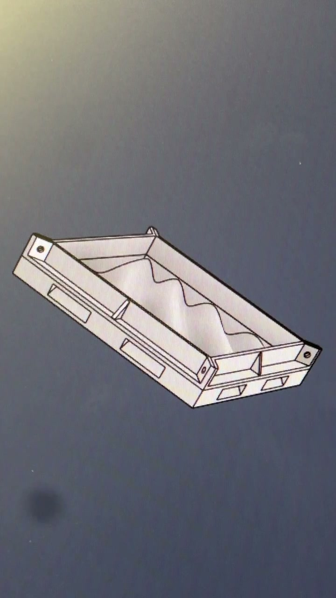
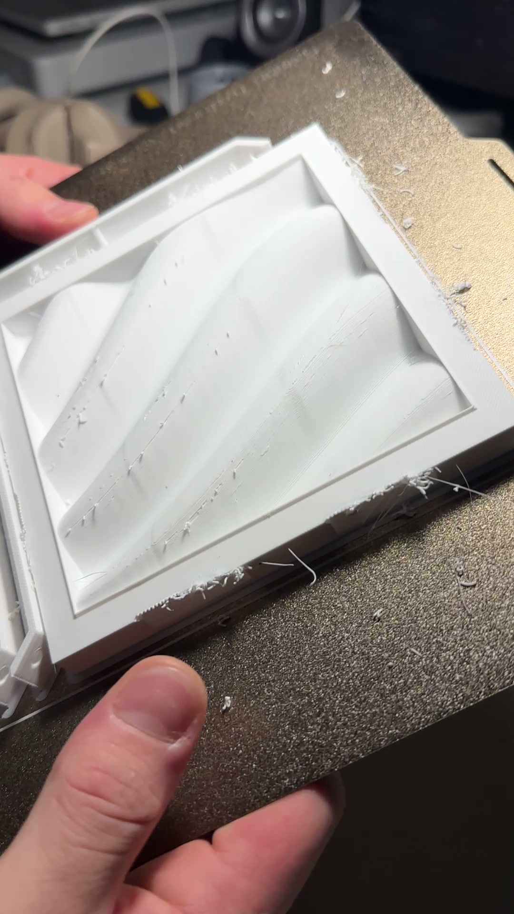
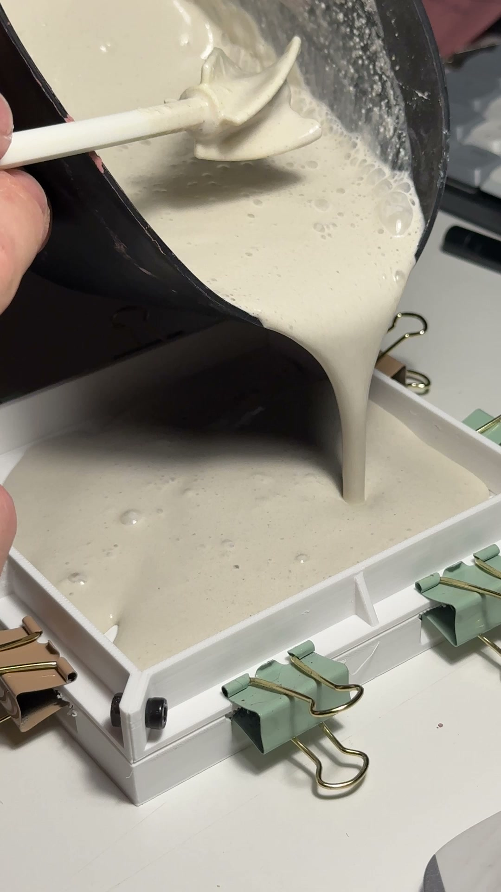
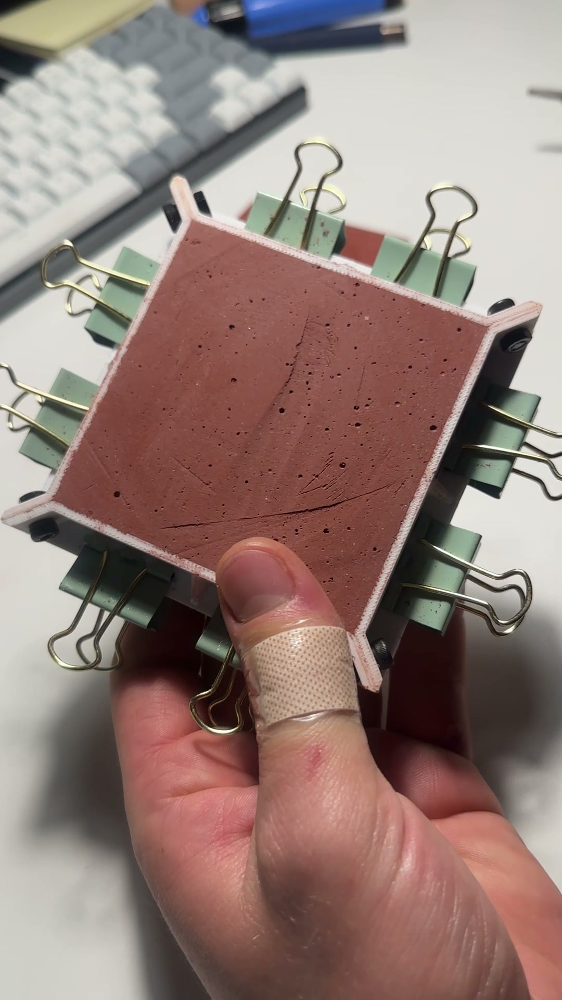

FIG 1.1 // CONVEX 80×80 SERIES (RAW GYPSUM & TERRACOTTA)
4-UNIT ARRAY

FIG 1.2 // MODULAR RETENTION FRAME + INTERCHANGEABLE INSERT
CAD VIEWPORT

FIG 1.3 // DIRECT FDM PRINTED MATRIX (DRAFT-COMPENSATED)
BUILD PLATE

FIG 1.4 // MINERAL SLURRY POUR & VIBRATION DEGASSING
WET CASTING

FIG 1.5 // PIGMENTED IRON-OXIDE CAST IN UNIFIED CLAMP FRAME
CURING STAGE

FIG 1.6 // DEMOLDED WAVE TILE SHOWING SHADOW GRADIENT
RAKING LIGHT